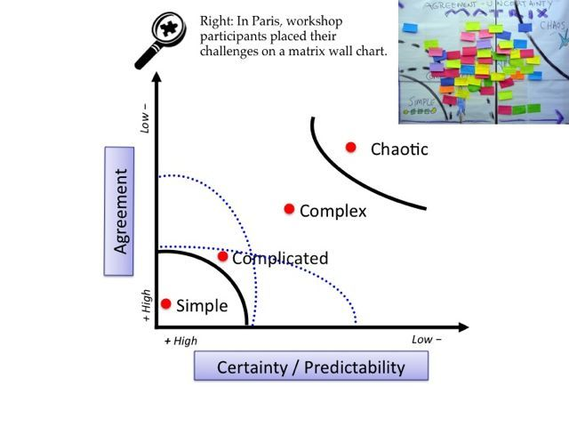
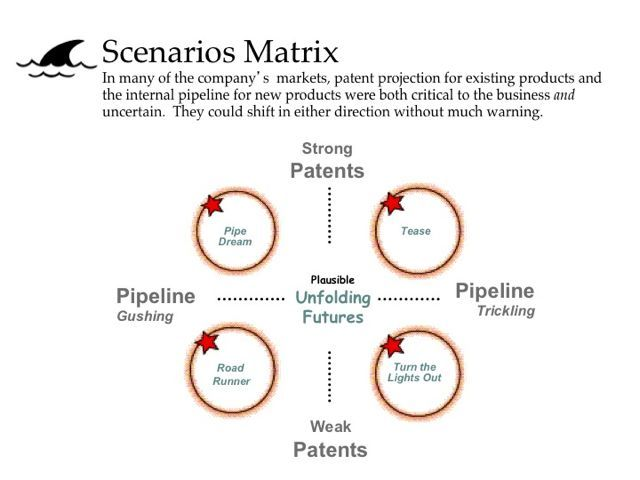
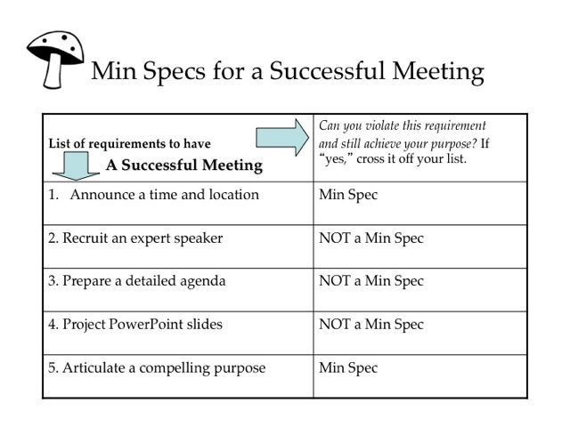
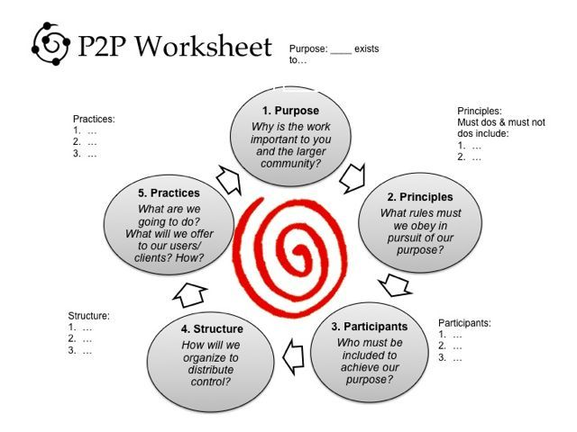
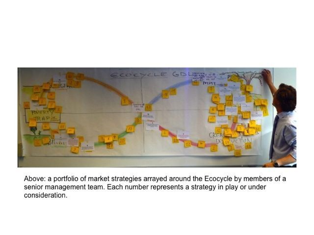

Mechanism for Building a 3-Year Org Strategy
Workshop 1 (45 min)
- Sort the team’s challenges into simple, Complicated, Complex, and Chaotic Domains (Agreement-&-Certainty Matrix) 
Workshop 2 (45 min)
- Develop Strategies for Operating in a Range of Plausible Yet Unpredictable Futures (Critical Uncertainties) 
Workshop 3 (30 min)
- Specify Only the Absolute “Must dos” and “Must not dos” for Achieving a Purpose (Min Specs) 
Other Useful Workhops
For new teams or for a challenge that requires re-thinking the team’s purpose you can use (Purpose-To-Practice (P2P). 60 min workshop) to design the five essential elements for a resilient and enduring initiative. 
If the team struggles in identifying the most impactful work use Ecocycle Planning to Analyze the Full Portfolio of Activities and Relationships to Identify Obstacles and Opportunities for Progress. 
The Concepts Behind This Mechanism
What are those 4 workshops? In order to understand them, you should get familiar with a few concepts. I’ll update this section of the page with more concepts.
1. Liberating Structures
Liberating Structures (LS) are simple rules that make it possible to include and engage every voice in shaping the future. LS consists of 33 practical methods versatile enough for anyone to use for a wide array of activities and challenges. None require expert training. Seeing them in action once is enough for many novices to get results and adapt them for use in other settings.
2. Cynefin
Notice that the first workshop, Agreement-&-Certainty Matrix, is based on Cynefin. Cynefin is a framework for decision making. It’s a tool that helps to navigate uncertainty by aligning the solution to the challenge. Making sense of situations depending on how predictable or unpredictable they are.
Typical mistakes when applying the Cynefin framework 1. The Cynefin framework is a pragmatic decision-making model, which focuses on solving the situation currently at hand and not on the future success of a project. If you do not keep this in mind, problems may arise with regard to the project management or the project could fail entirely. 2. **Applying the simple strategy for a complex or complicated situation**: Simple situations are easier to deal with. A lot of managers therefore tend to distort and simplify the situation at play. This can result in fatal decisions being made, thereby jeopardizing the success of the project. 3. Tackling a complex situation using the strategies for a complicated situation: A complicated system is managed with expert knowledge and thorough analyses. However, if you use this approach in a complex system, there is a great risk of getting caught up in analysis loops and ineffective processes. 4. Failing to recognize a chaotic situation: If the system becomes chaotic, a quick response and the right management technique are vital to get on top of the chaotic situation as quickly as possible. If, as a manager, you act too hesitantly or enact rules that are less than ideal for the company, it can lead to long-term damage.
Videos
- Introduction video (9 min video)
- Intro to Cynefin by Liz Keogh (10 min video)
Articles
- Summary (10 min read)
- Summary (20 min read)
- Volatility, uncertainty, complexity and ambiguity (VUCA) (20 min read)